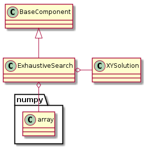
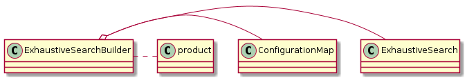

This is an exhaustive grid-search.
These are constants to make building the ExhaustiveSearch object less error-prone.
class ExhaustiveSearchConstants(object):
__slots__ = ()
# configuration options
minima_option = 'minima'
maxima_option = 'maxima'
increments_option = 'increments'
datatype_option = 'datatype'

ExhaustiveSearch |
|
ExhaustiveSearch.check_rep |
|
ExhaustiveSearch.close |
|
ExhaustiveSearch.carry |
|
ExhaustiveSearch.__call__ |
The constructor takes five required arguments and one optional argument.
| Argument | Type | Description |
|---|---|---|
minima |
numpy array | lowest-allowed coordinates |
maxima |
numpy array | highest-allowed coordinates |
increment |
numpy array | step-sizes for coordinate changes |
quality |
Object | jude of the quality of candidate solutions |
solutions |
writeable object | place to write outcome of candidate |
observers |
callable object | receiver of best solution found |
The __call__ method is the main way to use the ExhaustiveSearch optimizer.
This is a builder of exhaustive searches.

ExhaustiveSearchBuilder |
|
ExhaustiveSearchBuilder.product |